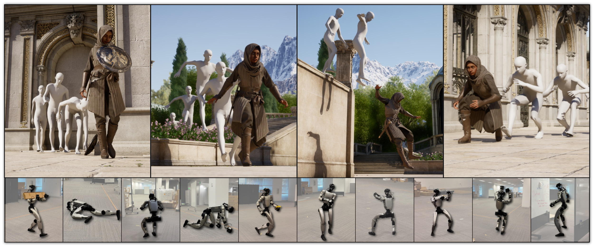

@misc{
wang2026motionbricksscalablerealtimemotions,
title={MotionBricks: Scalable Real-Time Motions with Modular Latent Generative Model and Smart Primitives},
author={Tingwu Wang and Olivier Dionne and Michael De Ruyter and David Minor and Davis Rempe and Kaifeng Zhao and Mathis Petrovich and Ye Yuan and Chenran Li and Zhengyi Luo and Brian Robison and Xavier Blackwell and Bernardo Antoniazzi and Xue Bin Peng and Yuke Zhu and Simon Yuen},
year={2026},
eprint={2604.24833},
archivePrefix={arXiv},
primaryClass={cs.RO},
url={https://arxiv.org/abs/2604.24833},
}